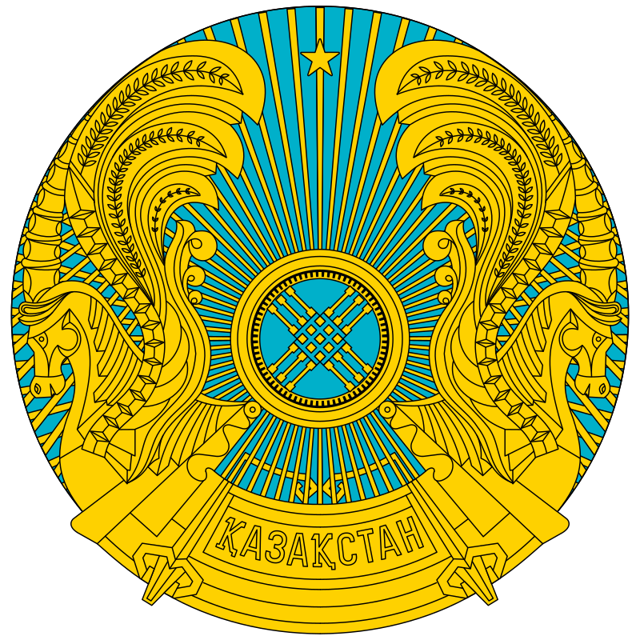

1991 жылы Қазақстан егеменді ел болды. Еліміздің Тәуелсіздігін ең алғаш болып мұхиттың арғы жағында жатқан Америка Құрама Штаттары, екінші Қытай, содан соң Ұлыбритания мойындады. Оның артынан Моңғолия, Франция, Жапония, Оңтүстік Корея және Иран Ислам мемлекеті мойындады. Ал «Тәуелсіздігімізді ең алғаш болып бауырлас Түркия мемлекеті мойындады» деген сөз ақиқат болмай шықты. Түркия алғаш болып Қазақстанда өз елшілін ашқан, бірақ тәуелсіздігімізді мойындауда он жетінші болды. Бұл деректі Сыртқы істер министрінің орынбасары қызметін атқарған, елдің сыртқы саясат тұжырымдамасы авторларының бірі болған Вячеслав Ғиззатов айтты. Сонымен қатар осы жылдың 2 қазанында қазақтың тұңғыш ғарышкері, Халық Қаһарманы Тоқтар Әубәкіров ғарышқа сапар шекті.
1992 жылдың 2 наурызында Қазақстан Біріккен Ұлттар Ұйымының мүшесі атанды. Осы жылы мемлекеттік рәміздер — Әнұран, Елтаңба және Туды жасауға конкурс жарияланды. 1992 жылдың 4 маусымында Тұңғыш Президентіміз Н.Назарбаев «Қазақстан Республикасының мемлекеттік туы», «Қазақстан Республикасының мемлекеттік елтаңбасы», «Қазақстан Республикасының мемлекеттік әнұраны туралы» заңға қол қойды.
1993 жылдың 28 қаңтарында Қазақстан Республикасының тұңғыш Ата заңы қабылданды. Осы жылы 15 қарашада ұлттық валютамыз - теңге айналымға енді.
1994 жылдың 16 ақпанында Елбасы Н.Назарбаев Ядролық қаруды таратпау туралы шартқа қол қойды. Сөйтіп Қазақстан өз еркімен қуатты қарудан бас тартып, ядролық қаруы жоқ ел ретінде осынау зұлматпен күрестің алғашқы баспалдағын қалады.
1995 жылы 30 тамызда жалпыхалықтық референдум негізінде Қазақстан Республикасының Ата Заңы қабылданып, 5 қыркүйек күні өз күшіне енді. Конституция 9 тараудан, 98 баптан тұрады.
| Президент | Уақыты |
| Нұрсұлтан Ә.Н | 1991ж-2019ж |
| Қасым-Жомарт К.Т | 2019ж-,,, |

Қазақстан Песпубликасының мемлекеттік Елтаңбасы — Қазақстан Республикасының негізгі мемлекеттік рәміздерінің бірі. Қазақстан Республикасының Президентінің “Қазақстан Республикасының Мемлекеттік рәміздері туралы” конституциялық заң күші бар Жарлығымен (24.1.1996) белгіленген. Рәміздік тұрғыдан ҚР мемлекеттік гербінің негізі — шаңырақ. Ол — елтаңбаның жүрегі. Шаңырақ — мемлекеттің түп-негізі — отбасының бейнесі. Шаңырақ — Күн шеңбері. Айналған Күн шеңберінің қозғалыстағы суреті іспетті, Шаңырақ — киіз үйдің күмбезі көшпелі түркілер үшін үйдің, ошақтың, отбасының бейнесі. Тұлпар — дала дүлділі, ер-азаматтың сәйгүлігі, желдей ескен жүйрік аты, жеңіске деген жасымас жігердің, қажымас қайраттың, мұқалмас қажырдың, тәуелсіздікке, бостандыққа ұмтылған құлшыныстың бейнесі. Қанатты тұлпар — қазақ поэзиясындағы кең тараған бейне. Ол ұшқыр арманның, самғаған таңғажайып жасампаздық қиялдың, талмас талаптың, асыл мұраттың, жақсылыққа құштарлықтың кейпі. Қанатты тұлпар Уақыт пен Кеңістікті біріктіреді. Ол өлмес өмірдің бейнесі. Бір шаңырақтың астында тату-тәтті өмір сүретін Қазақстан халқының өсіп-өркендеуін, рухани байлығын, сан сырлы, алуан қырлы бет-бейнесін паш етеді. Бес бұрышты жұлдыз гербтің тәжі іспетті. Әрбір адамның жол нұсқайтын жарық жұлдызы бар. Қазақстан Песпубликасының мемлекеттік Елтаңбасының авторлары — Жандарбек Мәлібеков пен Шотаман Уәлиханов.
Қазақстан Республикасының мемлекеттік Туы – Қазақстан Республикасының мемлекеттік негізгі рәміздердің бірі. ҚР Президентінің “Қазақстан Республикасының Мемлекеттік рәміздері туралы” конституциялық заң күші бар Жарлығымен (24.1.1996) белгіленген. Мемлекеттік ту көгілдір түсті тік бұрышты кездеме. Оның ортасында арайлы күн, күннің астында қалықтаған қыран бейнеленген. Ағаш сабына бекітілген тұста — ұлттық оюлармен кестеленген тік жолақ өрнектелген. Күн, арай, қыран және ою-өрнек — алтын түсті. Тудың ені ұзындығының жартысына тең. ҚР мемлекеттік туының авторы — суретші Шәкен Ниязбеков. Бірыңғай көк-көгілдір түс төбедегі бұлтсыз ашық аспанның биік күмбезін елестетеді және Қазақстан халқының бірлік, ынтымақ жолына адалдығын аңғартады. Бұлтсыз көк аспан барлық халықтарда әрқашан да бейбітшіліктің, тыныштық пен жақсылықтың нышаны болған. Геральдика (гербтану) тілінде — көк түс және оның түрлі реңкі адалдық, сенімділік, үміт сияқты адамгершілік қасиеттерге сай келеді. Ежелгі түркі тілінде “көк” сөзі аспан деген ұғымды білдіреді. Көк түс түркі халықтары үшін қасиетті ұғым. Түркі және әлемнің өзге де халықтарындағы көк түстің мәдени-семиотикалық тарихына сүйене отырып, мемлекеттік тудағы көгілдір түс Қазақстан халқының жаңа мемлекеттілікке ұмтылған ниет-тілегінің тазалығын, асқақтығын көрсетеді деп қорытуға болады. Нұрға малынған алтын күн тыныштық пен байлықты бейнелейді. Күн — қозғалыс, даму, өсіп-өркендеудің және өмірдің белгісі. Күн — уақыт, замана бейнесі. Қанатын жайған қыран құс — бар нәрсенің бастауындай, билік, айбындылық бейнесі. Ұлан-байтақ кеңістікте қалықтаған қыран ҚР-ның еркіндік сүйгіш асқақ рухын, қазақ халқының жан-дүниесінің кеңдігін паш етеді.
Қазақстанның «Менің Қазақстаным» атты қазіргі әнұраны 2006 жылдың қаңтарында қабылданған. Ол танымал аттас өлеңге негізделген еді. Әнұранның сөзін жазған авторы — Жұмекен Нәжімеденов және композиторы — Шәмші Қалдаяқов.